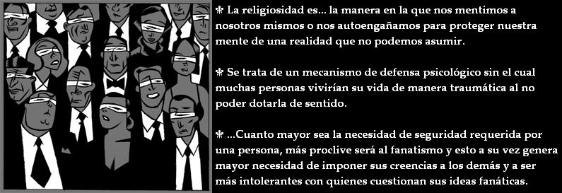

La religiosidad es una racionalización, es decir, es la manera en la que nos mentimos a nosotros mismos o nos autoengañamos para proteger nuestra mente de una realidad que no podemos asumir. Como el hecho de que nuestra mente es un subproducto de una parte del funcionamiento cerebral.

Se trata de un mecanismo de defensa psicológico sin el cual muchas personas vivirían su vida de manera traumática al no poder dotarla de sentido. Esta es la razón por la cual la formación y el conocimiento no son suficientes para evadir la necesidad de esta racionalización. El miedo es la base que mueve esta maquinaria de protección. El miedo a asumir nuestra objetiva finitud existencial; a reconocer que no somos la creación de nadie o que nuestro organismo no es mas que una maquinaria compleja producto de una muy larga evolución basada en la selección de las mejoras del azar. A partir de aquí no es difícil deducir que las personas religiosas lo son porque tienen miedo a la vida, a aceptar la realidad objetiva porque dicha realidad compromete su esquema mental del mundo, un esquema que protege su existencia más allá de la vida y le otorga un objetivo, y sin el cual su particular mundo se desmoronaría y perdería su sentido.
Cuando esta racionalización se restringe al ámbito personal, todo se queda ahí y no implica ninguna otra consecuencia ni tiene mayor trascendencia. El problema radica en que al tratarse de una necesidad psicológica de protección, el autoengaño puede ser insuficiente para protegerse psicológicamente, pues uno mismo puede llegar a dudar de su propia creencia si los demás no la comparten y de ahí surge la necesidad de conseguir difundir el autoengaño a otras personas. Cuantas más personas compartan el mismo sistema de creencias mayor seguridad sentirán cada una de ellas en que su autoengaño es cierto y de esta forma, amparándose en su cualidad numérica, terminan haciendo verdad sus racionalizaciones consiguiendo la seguridad psicológica que necesitan sin tener que cuestionársela. Es así como consiguen dejar de percibir su autoengaño como tal para ser percibido como una verdad incuestionable, si bien, siempre se fundamenta en un dogma y no en evidencias. Si no fuera por lo común del mecanismo sería indistinguible de un trastorno delirante de naturaleza psicótica. Es ahí cuando la frase “es increíble lo que se parecen la estructura de la religiosidad a la de la locura” cobra todo su sentido.
Por otra parte, cuanto mayor sea la necesidad de seguridad requerida por una persona, más proclive será al fanatismo y esto a su vez genera mayor necesidad de imponer sus creencias a los demás y a ser más intolerantes con quienes cuestionan sus ideas fanáticas. Esta intolerancia extrema a la divergencia de opinión es una reacción de defensa ante lo que ellos perciben como una amenaza, pues cualquiera que cuestione sus creencias pone en riesgo su propia estabilidad psicológica, lo que supone un riesgo que no pueden tolerar.
Este mecanismo explica la mayoría de los conflictos religiosos que tantas vidas han costado.
Muchas personas a lo largo de la historia han sido conscientes de este mecanismo de protección psicológica y ha sido utilizado inescrupulosamente para obtener dominio y control sobre la conducta de estas personas que son fácilmente manipuladas apelando a sus miedos. Las instituciones religiosas son el paradigma de esta empresa de la manipulación social que sigue vigente aún en nuestros días, pero también existen otras fórmulas que consiguen parecida manipulación basándose en los mismos principios. Astrólogos, curanderos, homeópatas, futurólogos y toda esta serie de pseudocientíficos son buen ejemplo de ello.
Y es que, después de todo, la realidad sigue su curso a pesar de nuestras creencias…

Volver a Simplemente ateísmo
Comentarios
Comments powered by Disqus